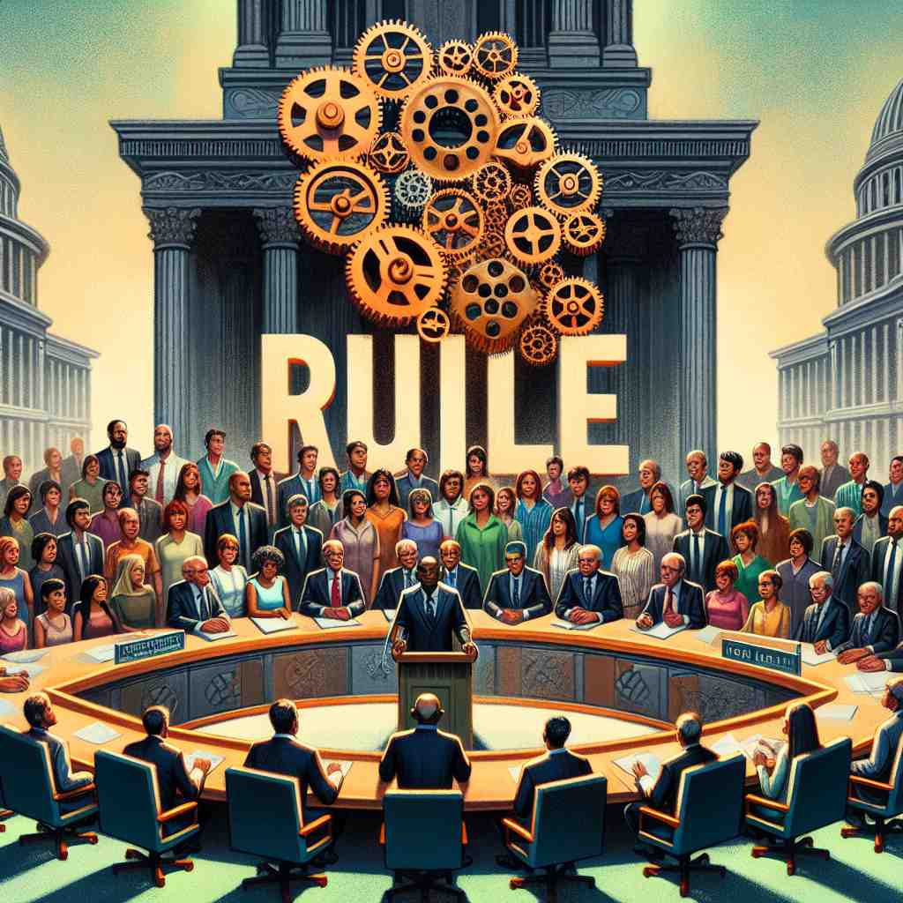

💬 Everyone is expected to follow the rule in this meeting.
💬 Students must follow the school rules to create a good learning environment.

💬 Everyone must follow the rule during the meeting.
💬 Everyone should follow the rule in the court.
🔈 [ruːl]
🗝️ n. a statement that tells you what you can or cannot do in a particular situation
🖼️ 在一个安静的图书馆里，墙上挂着一个大标牌，上面写着'请保持安静'。一名学生指着标牌对他的朋友说：'这就是这里的规则，我们得遵守。'
🔍 想象'rule'是一条指导线，无论是具体的规定、统治行为，还是测量工具，都源于这个设定标准和指导方向的核心概念。通过联想不同场景下的'规则'作用，可以更好地理解和记忆'rule'的多重含义。
💬 Everyone is expected to follow the rule in this meeting.
💬 Students must follow the school rules to create a good learning environment.
💬 Everyone must follow the rule during the meeting.
💬 Everyone should follow the rule in the court.
🌳 由词根 "reg-"（指导、统治）演变而来，形式上简化为 'rule'，意为 "规则、统治"。
💡 可以联想到 "ruler"（统治者），掌握规则的人。因此 'rule' 与控制、管理有关。
🗝️ v. to control or govern an area
🖼️ 在一个古老的城堡中，国王坐在王座上，在他的面前是一幅巨大的地图。他指着地图上的一个区域，对顾问们说：'我们必须努力治理这些土地，确保人民的幸福。'
💬 The king ruled the country for 50 years.
❓ 通过制定和执行规则来管理
🗝️ v. to be the most powerful or important
🖼️ 在一场盛大的音乐颁奖典礼上，一位歌手走上舞台，观众们热烈地欢呼。主持人宣布：'她的歌曲统治了今年的排行榜。这就是她的力量。'
💬 In this office, the customer's needs rule.
❓ 像规则一样主导或支配
🗝️ n. a long, straight piece of wood or metal used for measuring
🖼️ 在一个繁忙的装修工地上，工人们正用一根长长的木尺子测量墙壁的长度，以确保每块砖都能准确地放置。
💬 Use a ruler to draw a straight line.
❓ 用于测量的工具，类似于制定标准的规则
🗝️ n. the normal or expected state of things
🖼️ 在一堂数学课上，老师问道：'在三角形中，两边之和大于第三边，这是一条普遍的规则。谁能说出为什么？'
💬 As a rule, the shop closes at 6 pm.
❓ 像规则一样被普遍接受的常态
🗝️ v. to decide officially
🖼️ 在一个庄严的法庭上，法官认真听取了双方的陈述后，用锤子敲击桌子，宣布：'我裁定，被告无罪。'
💬 The judge ruled that the evidence was inadmissible.
❓ 做出如同规则一样的官方决定